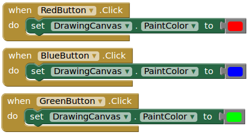

Píntate la cara
Objetivos
- Crear una aplicación que permita dibujar en la pantalla del móvil.
- Esta aplicación también permitirá:
- Elegir el color con el que pintar
- Limpiar lo que hayamos pintado
- Tomar un foto para pintar sobre ella
- Hacer uso de variables para controlar los parámetros.
Actividad
Abre AppInventor y crea un nuevo proyecto llamado "PaintPot".
Cambia la propiedad "AlignHorizontal" de "Screen1" a "center".
De la categoría "Layout", añade un "HorizontalArrangement" y cambia su propiedad "Width" a "Fill Parent".
En este contenedor horizontal vamos a poner nuestra paleta de colores.
Arrastra tres botones al contenedor, renombralos como "RedButton", "BlueButton" y "GreenButton". Cámbiales la propiedad "BackgroundColor" al color correspondiente y ponles como texto el nombre del color respectivo.
Cambia la propiedad "AlignHorizontal" del "HorizontalArrangement1" a "center".
Debe quedar algo parecido a esto:
De la categoría "Drawing and Animation" añade un "Canvas" bajo los botones anteriores. Renómbralo como "DrawingCanvas" y cambia estas propiedades:
- BackGroundColor: None
- PaintColor: Red (cuando empiece nuestro programa pintaremos en rojo)
- Width: Fill Parent
- Height: 300 px
Añade otro "HorizontalArrangement" debajo del Canvas (propiedad "Width" a "Fill Parent"). Arrastra 4 botones dentro de este contenedor.
Una vez tengas los cuatro botones renómbralos así:
- TakePictureButton
- WipeButton
- BigButton
- SmallButton
y cambia los textos que muestran a:
- "Take Picture"
- "Wipe"
- "Big dots"
- "Small dots"
Te quedará algo así:
De la categoría "Media" arrastra un componente "Camera" (es no visible):
Vamos a programar en la vista "Blocks".
Click sobre "DrawingCanvas" y elige "When ... Touched" y después eliges el evento "DrawCircle" de esta manera:
Para poder dibujar lineas, también click sobre "DrawingCanvas" y elige el evento "Dragged" y el procedimiento "DrawLine", de esta forma:
Añade ahora los eventos para los diferentes colores que podemos seleccionar con los botones que habíamos insertado (consistirá en cambiar la propiedad "PaintColor" de "DrawingCanvas" al color adecuado):

Añade el evento para borrar la pantalla, esto es, cuando se hace click sobre "WipeButon" se llama al procedimiento "Clear" de "DrawingCanvas":
Ahora vamos a poder capturar un foto para ponerla de fondo del Canvas. Para ello cuando haces click sobre "TakePictureButton" debes ejecutar el procedimiento "TakePicture" de "Camera1":
Después de sacar la foto y cerrar la cámara se produce un evento "AfterPicture" de "Camera1" que aprovecharemos para colocar la nueva imagen como "BackgroundImage" de "DrawingCanvas":
Es el momento de asignar los dos eventos click de "BigButton" y "SmallButton" para fijar la propiedad "LineWidth" de "DrawingCanvas":
Nos quedaría cambiar el programa para que cuando dibujemos solo un punto se dibuje del grosor que se haya indicado con los botones y no con "5" que es lo que habíamos puesto antes. Para ello creamos una variable global llamada "grosor" y la inicializamos a un valor 5:
Modificamos los eventos click de "BigButton" y "SmallButton" para que también cambien el valor de la variable "grosor":
Y cambiamos el evento "Dragged" para que use esa variable:
{kind=link}
Y ya lo tenemos.
Ampliación
Añade más botones de color a la paleta de colores de arriba y configuralos para que se pueda pintar con esos colores.
Ej:
Ampliación
Borra los botones para indicar el grosor de la línea (BigButton y SmallButton) y sustitúyelos por un componente "Slider" en la parte de abajo de la pantalla.
Puedes poner estos valores por defecto para el "Slider1":
El componente "Slider1" tendrá un evento "When Slider1.PositionChanged" en el que deberás cambiar la variable global "grosor" y fijar el "LineWidth" de "DrawingCanvas" a lo que valga "thumbPosition", que es el valor que devuelve el "Slider1" cuando movemos el marcador de la barra a una determinada posición.
Obra publicada con Licencia Creative Commons Reconocimiento No comercial Compartir igual 3.0

Programando en AppInventor por Francisco Nevado Montero se distribuye bajo una Licencia Creative Commons Atribución-NoComercial-CompartirIgual 4.0 Internacional.